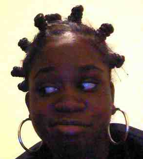

Bantu Knot Out
This is my own Bantu Knot-Out tutorial

- Detangle hair and if hair is curly continue to do so as you go along
- You want to divide you hair into sections, the bigger the sections the bigrer the knot and the looser the resulting curl
- Take one section at a time, (use some form of moisturizer to give it hold later) and tightly and firmly twist the hair until it coils around into a circular knot,if this doesnt happen, you are not twisting tight enough
- Secure your hair with a rubber band or pins, if your hair is curly enough you may just be able to tuck it under
- Leave in overnight, and carefully untwist knots. Seperate the coils as desired and play with your hair until you get the desired effect
This is Shelli
Her tutorial is as follows
- Shampoo and/or co-wash. I used DevaCare Low Poo because I had some product build up and I co-washed/detangled with Herbal Essence Hydralicious (I thin
- Section hair into four, and clip. I created two sections in the front and two in the back (parting from ear to ear and selected style part from front of forehead and parted to middle of nape of neck).
- Start with the left front section. I raked about a quarter size amount of DevaCare One Conditioner through the section first and then a similar amount of Aveda Defining Whip.
- Use a metal rat-tail comb to make a half moon like section for the twist and oil scalp with JBCO (Jamaican Black Castor Oil-- my new holy grail product). Next time, I'll probably just make my style part and do freestyle sections with fingers. Clipped remainder of section out of the way.
- To create the twist, separate the section of hair into two pieces. Twist EACH piece, SEPARATELY, counter-clockwise a few times, close to the scalp. Then, take the two pieces and twist them together clockwise while continuing the counter clockwise twisting motion with the separate sections of the twist. So, this creates a rope like effect and a tighter twist.
- Repeat this prior step for the remainder of the section and repeat for the remaining three sections. I re-wet my hair with Infusium 23 as my hair has started drying a lot more quickly due to henna, I believe. However, after a bit, I started worrying about the "cones" in the Infusium 23. So, I stopped with that, and started using a new concoction I created based upon a lot of information I've found on CurlyNikki! It's a mix of distilled water, Aloe Vera Juice/Gel (the edible kind), a tbsp of JBCO, some DevaCare One Conditioner and a little lavender oil (I call it WAJD).
- Once all the twists are complete, spray a little more of my concoction and some Elasta QP Silk Design spray for setting power on the ends and sealed with JBCO. Then, I set the ends on those "plushy" type fabric rollers using end papers.
- Sit under the dryer for about 30 minutes to an hour. I only did this because I'm impatient and couldn't wait to see the results. However, you could easily allow to dry overnight.
- Unroll the rollers and go to bed with twists pulled into a low ponytail secured with a satin scrunchie and a scarf tied around my head.
- The next morning, the twists were thin and my head was looking "scalpy." So, I styled the twists into an updo by pulling the ponytail a little higher, wrapping it around the scrunchie one time with the ends toward the top and securing the loose ends with one or two of those "doobie" bobby pins below the curls. I then adorned with a faux flower.
- At some point during the first week, I did wet my whole head in the shower in an attempt to make the twists "plump." It worked a little, but not enough for me to wear my hair down. I oiled my scalp and sealed my ends with JBCO every couple of days after spritzing my ends with the above Water/Aloe/JBCO/Deva concoction.
- However, after work on Day 10, I untwisted my twists and went to bed with a low ponytail and scarf.
- On the morning of Day 11, I took down the ponytail and sprayed my hair with my WAJD spritz, sealed the ends with JBCO and voila!! These are the results! The separated twists plumped up beautifully!!! I was pleasantly surprised as I wasn't really expecting to have a second style, let alone one I really loved!